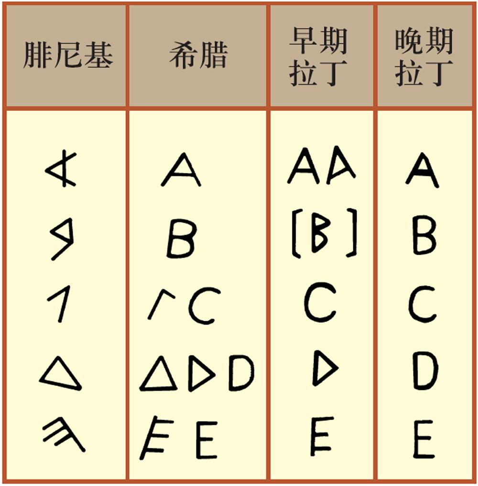

课件下载
古巴比伦王国与《汉谟拉比法典》
兴起：公元前3500年，两河流域出现很多小国
统一：公元前18世纪，汉谟拉比统一两河流域
《汉谟拉比法典》的地位：世界上迄今发现的古代第一部比较完备的成文法典。
解读《汉谟拉比法典》
从这些条文中简单分析古巴比伦的社会阶级状况。
两个自由民打架，一个人被打瞎了一只眼睛，对方就要同样被打瞎一只眼睛作为惩罚。
“以眼还眼，以牙还牙”的原则——在一定程度上反映了法典的公正观念，但这种公正主要体现在身份和社会地位相同的人之间。
如果奴隶主弄瞎了一个自由民的眼睛，只要拿出一定数量的钱就可了事奴隶打了自由人的嘴巴，就要被割去耳朵。
实行阶级歧视的原则——反应当时社会高的人对于社会低的阶级享有的特权。
如果理发师不经奴隶主的许可，擅自把不属于自己的奴隶头上的奴隶标记剃掉，理发师的手就要被砍掉。
反映了奴隶主为了维护自身的权益，采取的刑罚十分残酷。
自由民把从宫廷逃出的奴隶藏在家里，并且不服从交出，这家主人应被处死。
反映了当时奴隶主的特权受到法律的保护。
这些规定与现代的法律精神有什么不同？
它所体现的法律公平十分有限，主要是为了奴隶主阶级服务的。
法典的制定目的、实质分别是什么？
目的：巩固统治，维护社会秩序；
实质：维护奴隶主统治阶级利益，是代表奴隶主意志的法律。
| 各自特点 | 共同点 | |||
|---|---|---|---|---|
| 发源地 | 形成时间 | 共同点 | ||
| 象形文字 | 尼罗河流域 | 前3100年左右 | 古埃及人 | 推动人类文化的发展。 |
| 楔形文字 | 两河流域 | - | 苏美尔人 | |
| 腓尼基字母文字 | 两河流域 | - | 腓尼基人 | |
楔形文字：